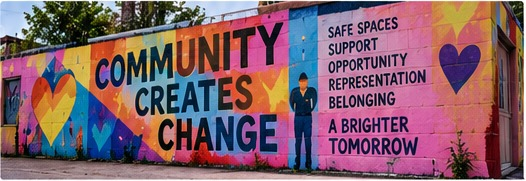

Our Mission
To provide safe spaces, support, and opportunities for LGBTQ+ individuals — centering Latinx/Hispanic communities, immigrants, BIPOC, and those with limited support systems.
Creating a more inclusive, equitable and empowered community for LGBTQ+ people — with a focus on Latinx, immigrant, BIPOC and underserved communities that often have limited access to support.
The Multi Cultural Queer+ Association (MQA+) is a community-centered nonprofit organization that creates safe spaces, resources, programs and opportunities for LGBTQ+ people — with a focus on Latinx, immigrant, BIPOC and other underserved communities.
Learn More About MQA+ →
To provide safe spaces, support, and opportunities for LGBTQ+ individuals — centering Latinx/Hispanic communities, immigrants, BIPOC, and those with limited support systems.
A community where every LGBTQ+ person is seen, valued, and empowered to thrive — with access to the resources, opportunities, and belonging they deserve.
Diversity Inclusion Creativity
Advocacy Love Empowerment
We lead with integrity, accountability, and a deep commitment to the communities we serve.
LGBTQ+ individuals, with a focus on Latinx/Hispanic communities, immigrants, BIPOC, trans individuals, youth, and those with limited support systems.
MQA+ was founded in 2024 by Luis Cruz and T’Relle Smith with a simple but powerful belief: community changes everything.
We saw a need for safe, welcoming spaces where LGBTQ+ individuals — especially Latinx, immigrant, BIPOC, and trans community members — could find support, opportunity, and belonging. What started as a vision between two community members has grown into a movement rooted in culture, care, and collective action.
We are more than a nonprofit.
We are a community. And we’re just getting started.

Luis Cruz & T’Relle Smith
Co-Founders, MQA+
Guided by Experience. Driven by Purpose.

Founder & CEO
Executive Director
Chef, community advocate, and visionary leader dedicated to creating opportunity through culture, food, and community.
Read My Story →
Co-Founder & COO
Board Chair
Operations leader, advocate, and changemaker committed to building systems that support people and strengthen communities.
Read My Story →Stronger Communities. Brighter Futures.
Housing
Assistance
Job
Readiness
Community
Support
Cultural
Connection
“Real People.
Real Change.” ♥
Whether you want to volunteer, donate, partner, or simply learn more — there’s a place for you here.